The Free Peoples

A hand-painted strategy game
Middle-earth
hangs in the balance.
Lead the Free Peoples, bend the world to the Shadow, or pursue the designs of the White Hand in a sprawling war of cards, armies, and ancient power.
A war told your way
Strategy with the soul of an old fantasy table.
RetroLOTR brings a sweeping conflict to a living hex map. Muster distinct armies, guide legendary characters, claim strongholds, and play illustrated cards that can turn a desperate battle.
Every campaign grows from competing powers and shifting fronts. Roads, rivers, mountains, and hidden lands shape the choices before you—and the story left behind.
The Dark Lord
Cover the lands.
Unleash vast hosts and break the strongholds of the West.The White Hand
Master the board.
Scheme, industrialize, and strike where rival powers are weakest.
The Riddermark · 3018 T.A.
Command the war
Every move writes history.
- 01
Shape your armies
Recruit troops, combine forces, and march commanders across a dangerous world.
- 02
Play the moment
Build a deck around your power and answer the battlefield with characters, actions, spells, and events.
- 03
Outthink rival powers
Read the terrain, defend vital routes, and pursue objectives before the age turns against you.
Choose your leader
Take command of your campaign.
- 01
Pick a scenario
From the Start menu, choose a campaign — from the classic random earth of Champions of Middle Earth to the authored 2950 T.A. story of The Untold War of the Ring.
- 02
Browse the company
Move the mouse wheel over the carousel to cycle through the available leaders — Gandalf, Saruman, Sauron and their many flavours, each with its own deck identity.
- 03
Confirm your choice
Click the front card or the New Game button. Choose Yes to begin as that leader, or No to return to the selection screen.
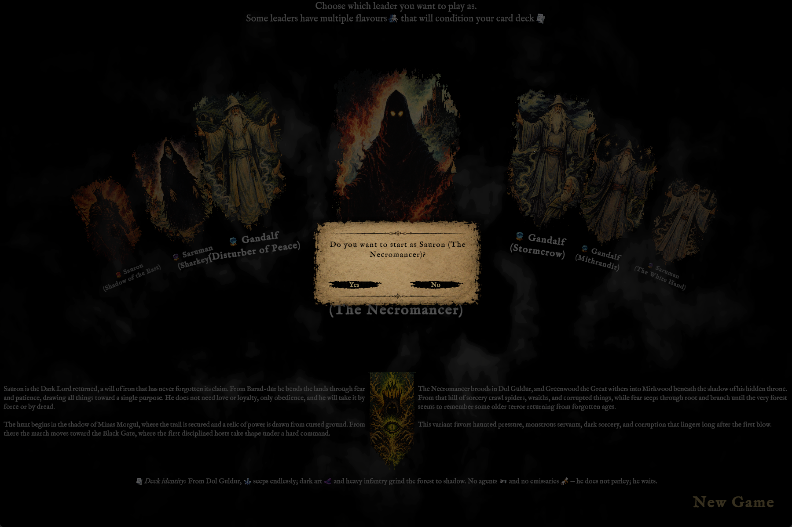
"Do you want to start as Sauron (The Necromancer)?"
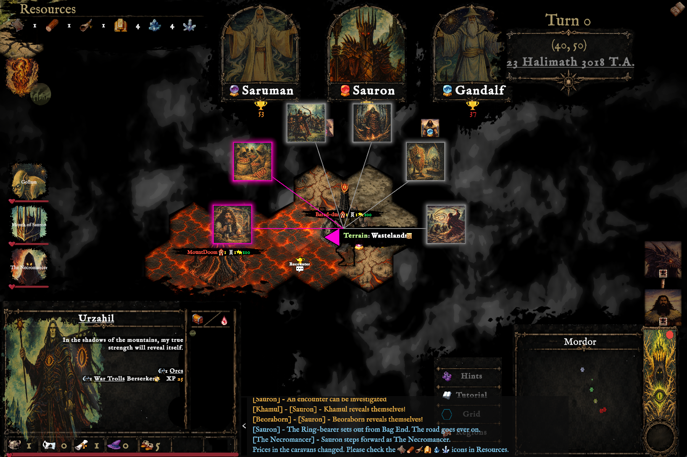
Turn 0 · Dol Guldur, 23 Halimath 3018 T.A.
Turn 0
The board wakes up beneath you.
- 01
Survey your realm
Your capital, characters, and starting resources are laid out on the hex map — fog of war hides the rest of Middle-earth until you explore it.
- 02
Read the turn log
Every reveal, encounter, and rival move streams into the log at the bottom of the screen, so you always know what changed and why.
- 03
Investigate and play
Click glowing markers to trigger encounters, and resolve event cards — illustrated moments like Secrets From A Lost Tome — as they arise.
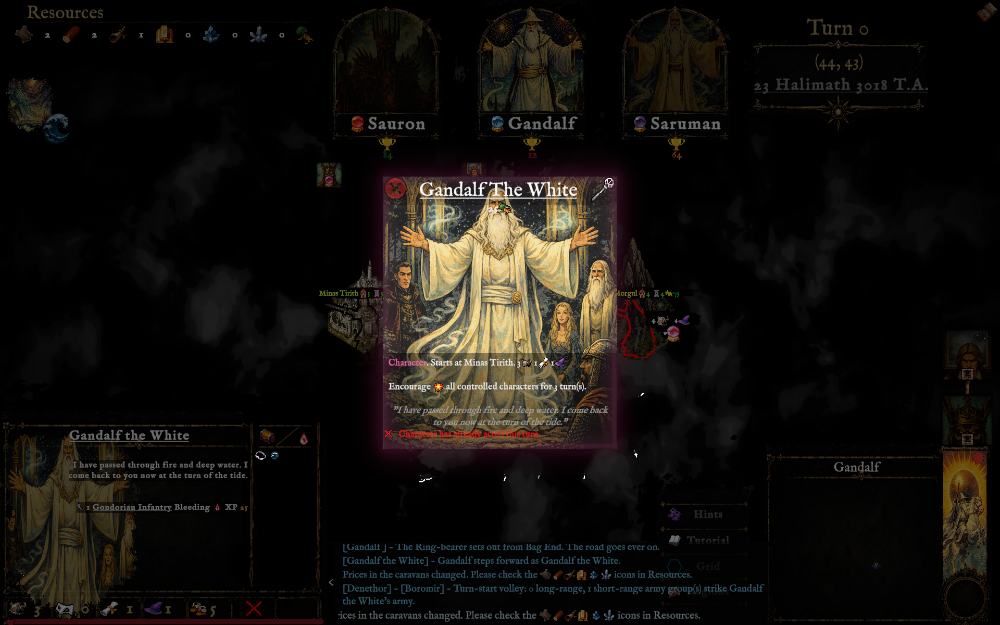
Hover a name, meet the card behind it
Know your company
Every character is a card too.
- 01
Hover a character's title
Hovering a leader's name — like Gandalf the White — reveals their full card: stats, portrait, and ability text.
- 02
Follow the underlines
Underlined army names such as Gondorian Infantry open that unit's own card, with its own stats and flavor text.
- 03
Check the field, too
A small icon beneath the Resources bar previews the current Environmental card in play, like Fury Of Ulmo.
Manage the realm
Prices, portents, and the passing of turns.
- 01
Click for prices
Click a Resources icon to see what it costs to Build and Sell — caravan prices shift turn to turn.
- 02
Answer the omens
A red badge on a leader's banner marks a waiting event; click it to react and clear the alert.
- 03
Close the day
When you're done, the disc in the bottom-right corner asks "End turn?" — confirm to advance the calendar.
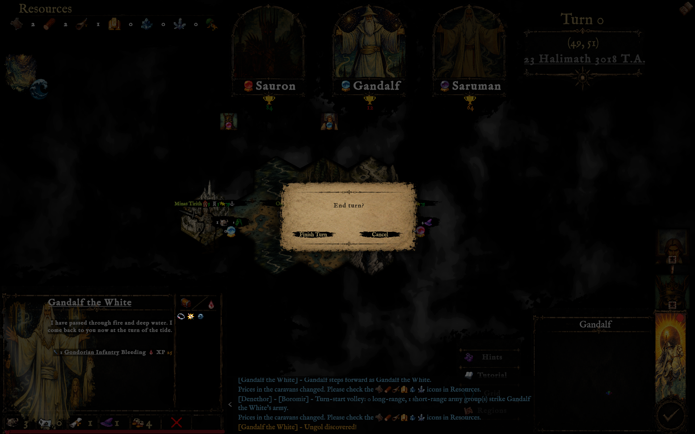
"End turn?" — Finish Turn or Cancel
“The board remembers every march, every broken oath, every last stand.”
— From the annals of the campaign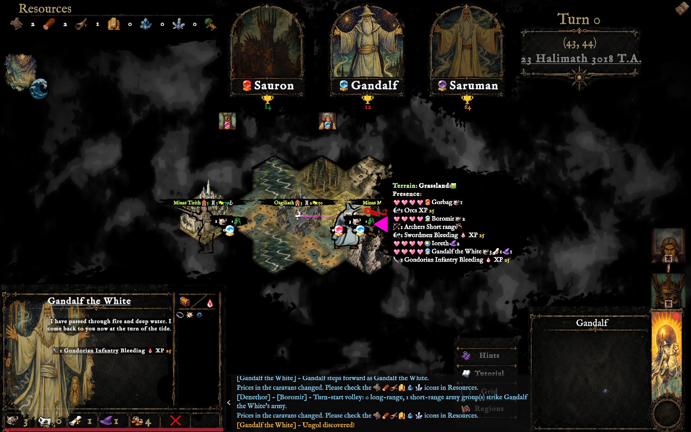
Gandalf the White, deep in enemy territory
Into harm's way
Cross into the enemy's shadow.
- 01
Move hex by hex
Arrow keys and W A S D send a selected character across the map — the game's own Movement tutorial shows exactly which key goes which way.
- 02
Read the outlines
Spotted enemies are traced in red, spotted neutrals in grey — a hex bordered in red is one you enter at your own risk.
- 03
Share the ground
Gandalf the White walks straight to Minas Morgul, standing on the same hex as Gorbag's Orcs, Boromir, and Ioreth — every side of the war, face to face.
Let the world play itself
Watch Mode.
- 01
Toggle it on
Press Ctrl+Shift+Tab at any point in a campaign to hand control to Autoplay and sit back as your power, and every rival, takes its turns.
- 02
Watch history unfold
Armies march, encounters resolve, and trophy scores climb turn after turn — a hands-free way to see how a campaign plays out.
- 03
Take back the reins
Press Ctrl+Shift+Tab again — the same shortcut exits Watch Mode, and an "Autoplay disabled" banner confirms you're back in control.
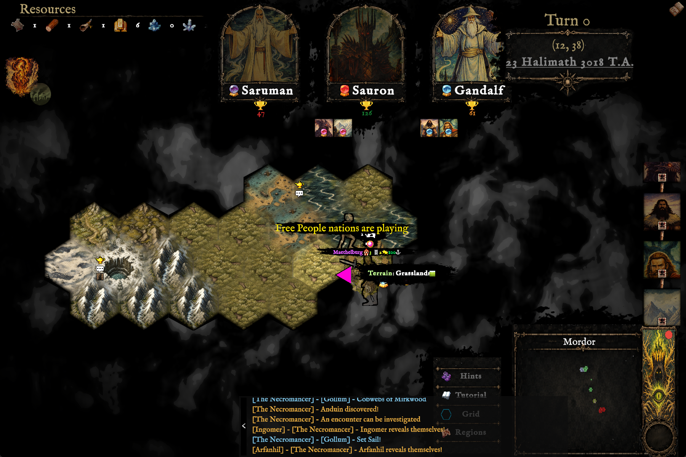
Watch Mode · the campaign plays itself
From the campaign
Three fronts.
One fate.
Hand-painted terrain, character portraits, illustrated cards, and atmospheric interfaces give each campaign the texture of a lost fantasy game brought back to life.


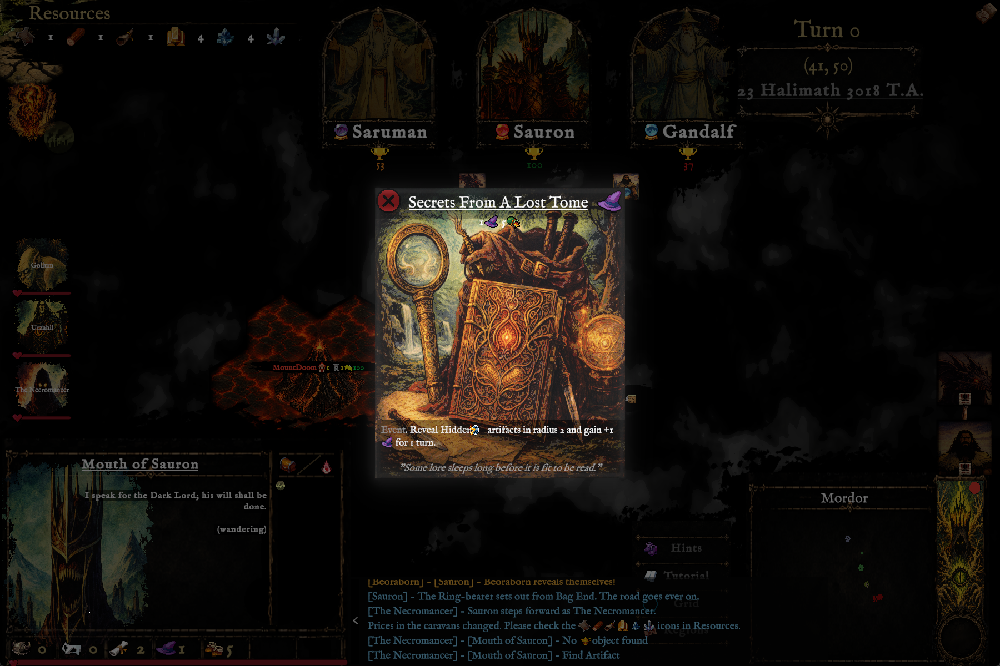
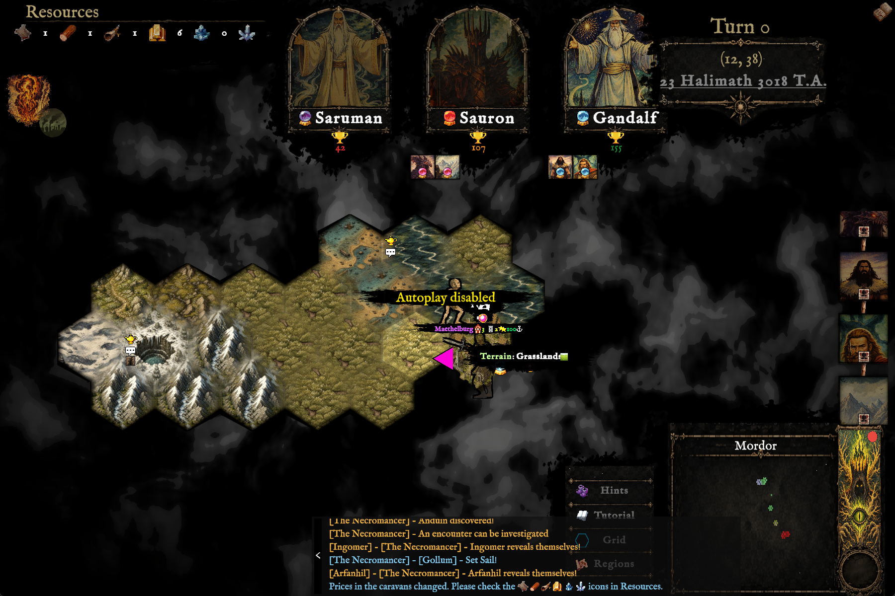
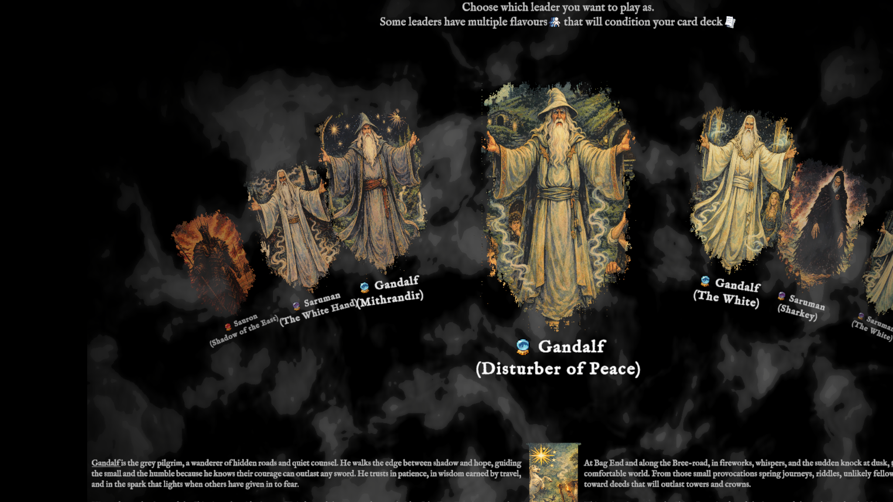
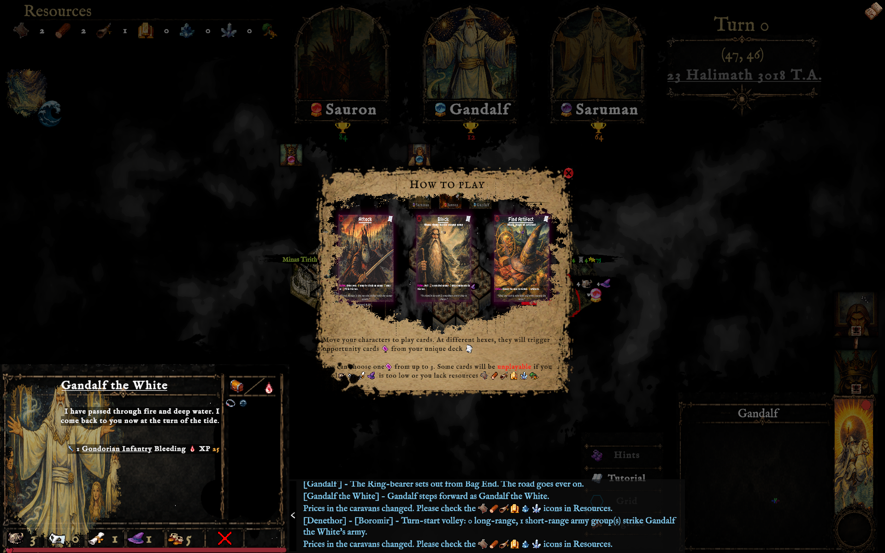
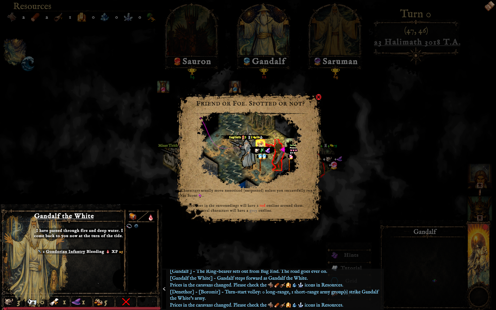
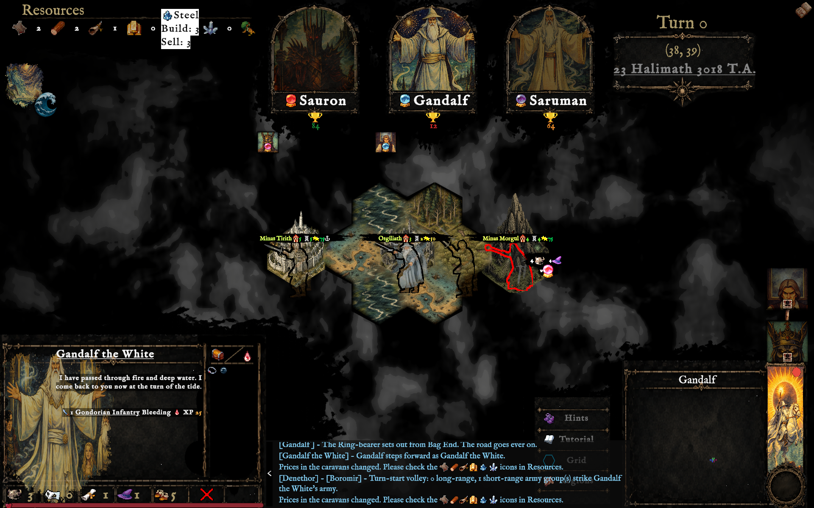
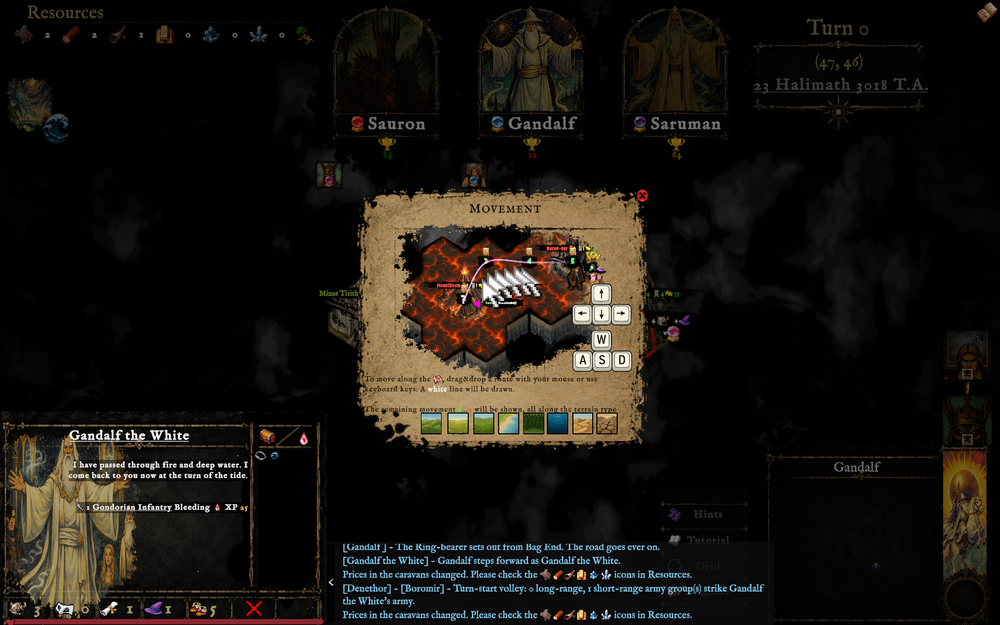
The road goes ever on
Follow the making
of RetroLOTR.
Explore the project, watch the campaign grow, and follow development on GitHub.
Visit the repository